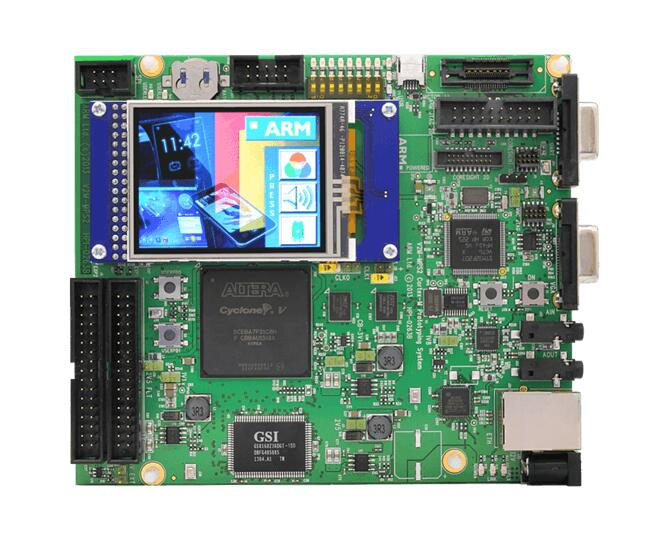

ARM MPS2+ AN521
Overview
The mps2/an521 board configuration is used by Zephyr applications that run on the MPS2+ AN521 board. It provides support for the MPS2+ AN521 ARM Cortex-M33 CPU and the following devices:
Nested Vectored Interrupt Controller (NVIC)
System Tick System Clock (SYSTICK)
Cortex-M System Design Kit GPIO
Cortex-M System Design Kit UART

In addition to enabling actual hardware usage, this board configuration can also use QEMU to emulate the AN521 platform running on the MPS2+.
More information about the board can be found at the MPS2 FPGA Website.
Note
This board configuration makes no claims about its suitability for use with actual MPS2 hardware systems using AN521, or any other hardware system. It has been tested on actual hardware, but its primary purpose is for use with QEMU and unit tests for the ARM Cortex-M33.
Zephyr board options
The MPS2+ AN521 is a dual core SoC with Cortex-M33 architecture on both cores (CPU0 and CPU1). Zephyr provides support for building firmware images for both CPU0 and CPU1. For CPU0 supporting ARM Security Extensions both Secure and Non-Secure firmware images may be built.
The BOARD options are summarized below:
BOARD |
Description |
|---|---|
mps2/an521/cpu0 |
For building Secure (or Secure-only) firmware on CPU0 |
mps2/an521/cpu0/ns |
For building Non-Secure firmware for CPU0 |
mps2/an521/cpu1 |
For building firmware on CPU1 |
Memory Partitioning
The AN521 has 4MB allocated for code space, and 4MB for SRAM. These memory regions are shared across both cores, and are aliased in both secure and non-secure regions, where the secure memory alias has an offset of 0x10000000 relative to non-secure.
The following memory map and partitioning schemes are used by default, where the offset value is the offset from the base of the 4MB code or SRAM block, ignoring the S/NS alias difference.
Board |
CPU |
Code (Offset) |
SRAM (Offset) |
S/NS Alias |
|---|---|---|---|---|
mps2/an521/cpu0 |
0 |
4MB (0) |
4MB (0) |
S |
mps2/an521/cpu0/ns |
0 |
512KB (1MB) |
512KB (1MB) |
NS |
mps2/an521/cpu1 |
1 |
468KB (3628KB) |
512KB (1.5MB) |
NS |
The mps2/an521/cpu0/ns board target is intended to be used with TF-M, with the
Zephyr memory map matching the AN521 memory map defined upstream in TF-M. TF-M
boots the secure processing environment before initialising Zephyr in the
non-secure processing environment. The non-secure Zephyr image is offset to
make room for the secure bootloader, and the secure firmware (TF-M), resulting
in a starting address of 0x00100000. SRAM begins with a 1MB offset at
0x28100000.
The mps2/an521/cpu1 board target is setup for the second core on the
AN521, using the final 468KB code memory in the 4MB code block. This value
is chosen to maintain compatibility with TF-M, which marks that final 468KB
code region as Unused. Code memory thus starts with an offset of
3628KB (address 0x0038B000), and sram starts with an offset of 1.5MB
(address 0x28180000).
This memory map enables the two alternative board targets to be used together if required, at the cost of reducing the amount of code memory available on the second core to the worst-case scenario from TF-M.
When using one of the alternative board targets (mps2/an521/cpu0/ns or
mps2/an521/cpu1), care needs to be taken with the amount of code or
SRAM memory used on the primary board target (mps2/an521) since there is
some overlap in the memory maps.
Hardware
ARM MPS2+ AN521 provides the following hardware components:
Dual core ARM Cortex-M33
Soft Macro Model (SMM) implementation of SSE-200 subsystem
Memory
4MB of code memory (SSRAM1)
4MB of SRAM (SSRAM2 and SSRAM3)
16MB of parallel SRAM (PSRAM, non-secure only)
8KB of NVM code
Debug
P-JTAG, SWD & 16-bit TRACE
UART port
Interface
AHB GPIO connected to the EXP port
UART
SPI
I2C
I2S
Color LCD serial interface
Ethernet
VGA
On-board Peripherals
Color LCD
8 LEDs
8 Switches
External SSRAM1, SSRAM2 & SSRAM3
SMSC9220
CS42L52
Supported Features
Refer to V2M MPS2 for details.
Interrupt Controller
MPS2+ AN521 is a Cortex-M33 based SoC and has 15 fixed exceptions and 77 IRQs.
A Cortex-M33-based board uses vectored exceptions. This means each exception calls a handler directly from the vector table.
Zephyr provides handlers for exceptions 1-7, 11, 12, 14, and 15, as listed in the following table:
Exc# |
Name |
Remarks |
Used by Zephyr Kernel |
|---|---|---|---|
1 |
Reset |
system initialization |
|
2 |
NMI |
system fatal error |
|
3 |
Hard fault |
system fatal error |
|
4 |
MemManage |
MPU fault |
system fatal error |
5 |
Bus |
system fatal error |
|
6 |
Usage fault |
Undefined instruction, or switch attempt to ARM mode |
system fatal error |
7 |
SecureFault |
Unauthorized access to secure region from ns space |
system fatal error |
8 |
Reserved |
not handled |
|
9 |
Reserved |
not handled |
|
10 |
Reserved |
not handled |
|
11 |
SVC |
system calls, kernel run-time exceptions, and IRQ offloading |
|
12 |
Debug monitor |
system fatal error |
|
13 |
Reserved |
not handled |
|
14 |
PendSV |
context switch |
|
15 |
SYSTICK |
system clock |
|
16 |
Reserved |
not handled |
|
17 |
Reserved |
not handled |
|
18 |
Reserved |
not handled |
Pin Mapping
The ARM MPS2+ AN521 Board has 4 CMSDK AHB GPIO controllers. Each providing 16 bits of IO. These controllers are responsible for pin-muxing, input/output, pull-up, etc.
All GPIO controller pins are exposed via the following sequence of pin numbers:
Pins 0 - 15 are for GPIO0
Pins 16 - 31 are for GPIO1
Pins 32 - 47 are for GPIO2
Pins 48 - 51 are for GPIO3
Mapping from the ARM MPS2+ AN521 Board pins to GPIO controllers:
D0 : EXT_0
D1 : EXT_4
D2 : EXT_2
D3 : EXT_3
D4 : EXT_1
D5 : EXT_6
D6 : EXT_7
D7 : EXT_8
D8 : EXT_9
D9 : EXT_10
D10 : EXT_12
D11 : EXT_13
D12 : EXT_14
D13 : EXT_11
D14 : EXT_15
D15 : EXT_5
D16 : EXT_16
D17 : EXT_17
D18 : EXT_18
D19 : EXT_19
D20 : EXT_20
D21 : EXT_21
D22 : EXT_22
D23 : EXT_23
D24 : EXT_24
D25 : EXT_25
D26 : EXT_26
D27 : EXT_30
D28 : EXT_28
D29 : EXT_29
D30 : EXT_27
D31 : EXT_32
D32 : EXT_33
D33 : EXT_34
D34 : EXT_35
D35 : EXT_36
D36 : EXT_38
D37 : EXT_39
D38 : EXT_40
D39 : EXT_44
D40 : EXT_41
D41 : EXT_31
D42 : EXT_37
D43 : EXT_42
D44 : EXT_43
D45 : EXT_45
D46 : EXT_46
D47 : EXT_47
D48 : EXT_48
D49 : EXT_49
D50 : EXT_50
D51 : EXT_51
Peripheral Mapping:
UART_3_RX : D0
UART_3_TX : D1
SPI_3_CS : D10
SPI_3_MOSI : D11
SPI_3_MISO : D12
SPI_3_SCLK : D13
I2C_3_SDA : D14
I2C_3_SCL : D15
UART_4_RX : D26
UART_4_TX : D30
SPI_4_CS : D36
SPI_4_MOSI : D37
SPI_4_MISO : D38
SPI_4_SCK : D39
I2C_4_SDA : D40
I2C_4_SCL : D41
For more details refer to MPS2+ AN521 Technical Reference Manual (TRM).
LED
MPS2+ has 8 built-in LEDs connected to Serial Configuration Controller (SCC).
Note
The SCC register CFG_REG1 Bits [7:0] for LEDa, 0 = OFF 1 = ON.
System Clock
MPS2+ AN521 has several clocks connected:
MAINCLK : 20MHz
SYSCLK : 20MHz
S32KCLK : 32kHz
TRACECLK : 20MHz
SWCLKTCK : 20MHz
TRACECLKIN : 20MHz
Serial Port
The MPS2+ AN521 has five UARTs. The Zephyr console output by default, uses UART0, which is J10 on the board.
UART2 is reserved. And UART 1, 3 and 4 are alt-functions on the EXP ports.
Security components
Implementation Defined Attribution Unit (IDAU). The IDAU is used to define secure and non-secure memory maps. By default, all of the memory space is defined to be secure accessible only
Secure and Non-secure peripherals via the Peripheral Protection Controller (PPC). Peripherals can be assigned as secure or non-secure accessible
Secure boot
Secure AMBA® interconnect
Serial Configuration Controller (SCC)
The MPS2+ AN521 implements a Serial Configuration Control (SCC) register. The purpose of this register is to allow individual control of clocks, reset-signals and interrupts to peripherals, and pin-muxing, and the LEDs and switches.
Programming and Debugging
MPS2+ AN521 (CPU0) supports the Armv8m Security Extension. Applications built for the mps2/an521 board by default boot in the Secure state.
MPS2+ AN521 (CPU1) does not support the Armv8m Security Extension.
Building Secure/Non-Secure Zephyr applications with Arm® TrustZone®
Applications on the MPS2+ AN521 (CPU0) may contain a Secure and a Non-Secure firmware image. The Secure image can be built using either Zephyr or Trusted Firmware M (TF-M). Non-Secure firmware images are always built using Zephyr. The two alternatives are described below.
Note
By default the Secure image for the MPS2+ AN521 (CPU0) is built using TF-M.
Building the Secure firmware with TF-M
The process to build the Secure firmware image using TF-M and the Non-Secure firmware image using Zephyr requires the following steps:
Build the Non-Secure Zephyr application for MPS2+ AN521 (CPU0) using
-DBOARD=mps2/an521/cpu0/ns. To invoke the building of TF-M the Zephyr build system requires the Kconfig optionBUILD_WITH_TFMto be enabled, which is done by default when building Zephyr as a Non-Secure application. The Zephyr build system will perform the following steps automatically:Build the Non-Secure firmware image as a regular Zephyr application
Build a TF-M (secure) firmware image
Merge the output image binaries together
Optionally build a bootloader image (MCUboot)
Note
Depending on the TF-M configuration, an application DTS overlay may be required, to adjust the Non-Secure image Flash and SRAM starting address and sizes.
Building the Secure firmware using Zephyr
The process to build the Secure and the Non-Secure firmware images using Zephyr requires the following steps:
Build the Secure Zephyr application for MPS2+ AN521 (CPU0) using
-DBOARD=mps2/an521andCONFIG_TRUSTED_EXECUTION_SECURE=yandCONFIG_BUILD_WITH_TFM=nin the application project configuration file.Build the Non-Secure Zephyr application for MPS2+ AN521 (CPU0) using
-DBOARD=mps2/an521/cpu0/ns.Merge the two binaries together.
Building a Secure only application on MPS2+ AN521 (CPU0)
Build the Zephyr app in the usual way (see Building an Application
and Run an Application), using -DBOARD=mps2/an521 for
the firmware running on the MPS2+ AN521 (CPU0).
When building a Secure/Non-Secure application for the MPS2+ AN521 (CPU0), the Secure application will have to set the SAU/IDAU configuration to allow Non-Secure access to all CPU resources utilized by the Non-Secure application firmware. SAU/IDAU configuration shall take place before jumping to the Non-Secure application.
The following system components are required to be properly configured during the secure firmware:
AHB5 TrustZone Memory Protection Controller (MPC)
AHB5 TrustZone Peripheral Protection Controller (PPC)
Implementation-Defined Attribution Unit (IDAU)
For more details refer to Corelink SSE-200 Subsystem.
Building standalone applications on MPS2+ AN521 CPU1
Applications may be built for the second Cortex-M33 (remote) core of MPS2+ AN521. The core is referred to as CPU1.
Build the Zephyr app in the usual way (see Building an Application
and Run an Application), using -DBOARD=mps2/an521/cpu1 for
the firmware running on the MPS2+ AN521 (CPU1).
The Zephyr build will automatically trigger building a minimal (empty) secure-only firmware for CPU0, which will be used to boot the remote core (CPU1).
Flashing
MPS2+ AN521 provides:
A USB connection to the host computer, which exposes a Mass Storage
A Serial Port which is J10 on MPS2+ board
Build applications as described above. Here is an example for the Hello World application built as a secure-only application for CPU0.
# From the root of the zephyr repository
west build -b mps2/an521 samples/hello_world
Open a serial terminal (minicom, putty, etc.) with the following settings:
Speed: 115200
Data: 8 bits
Parity: None
Stop bits: 1
Reset the board, and you should see the following message on the corresponding serial port:
Hello World! mps2_an521
Uploading an application to MPS2+ AN521
Applications can be in elf, hex or bin format. The binaries are flashed when the board boots up, using files stored on the on-board Micro SD card. The Motherboard Configuration Controller (MCC) is responsible for loading the FPGA image and binaries.
Connect the MPS2+ to your host computer using the USB port. You should see a
USB connection exposing a Mass Storage (V2M_MPS2 by default).
The update requires 3 steps:
Copy application files to
<MPS2 device name>/SOFTWARE/.Open
<MPS2 device name>/MB/HBI0263C/AN521/images.txt.Update the
AN521/images.txtfile as follows:
TITLE: Versatile Express Images Configuration File
[IMAGES]
TOTALIMAGES: 1 ;Number of Images (Max: 32)
IMAGE0ADDRESS: 0x10000000 ;Please select the required executable program
IMAGE0FILE: \SOFTWARE\zephyr.bin
Reset the board, and you should see the following message on the corresponding serial port:
Hello World! mps2_an521
Note
Refer to the tfm_integration sample for more details about integrating with TF-M and multiple images scenario.